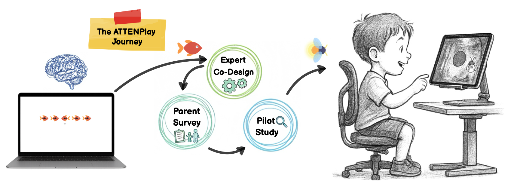
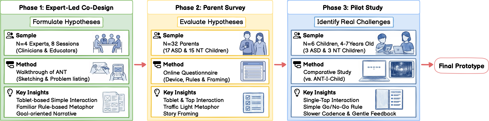
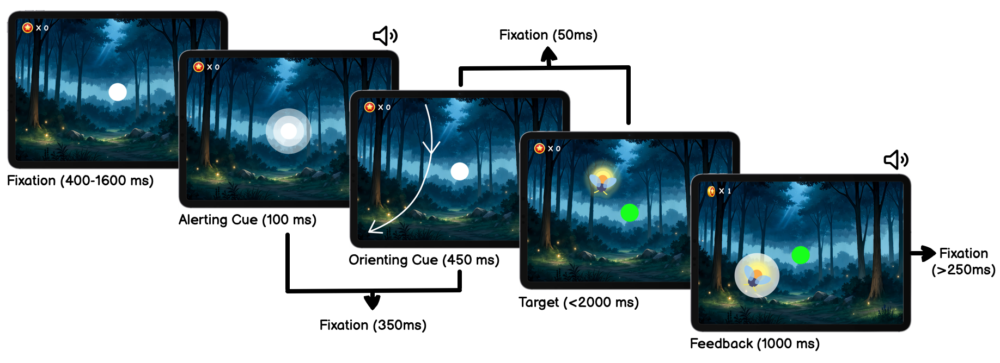
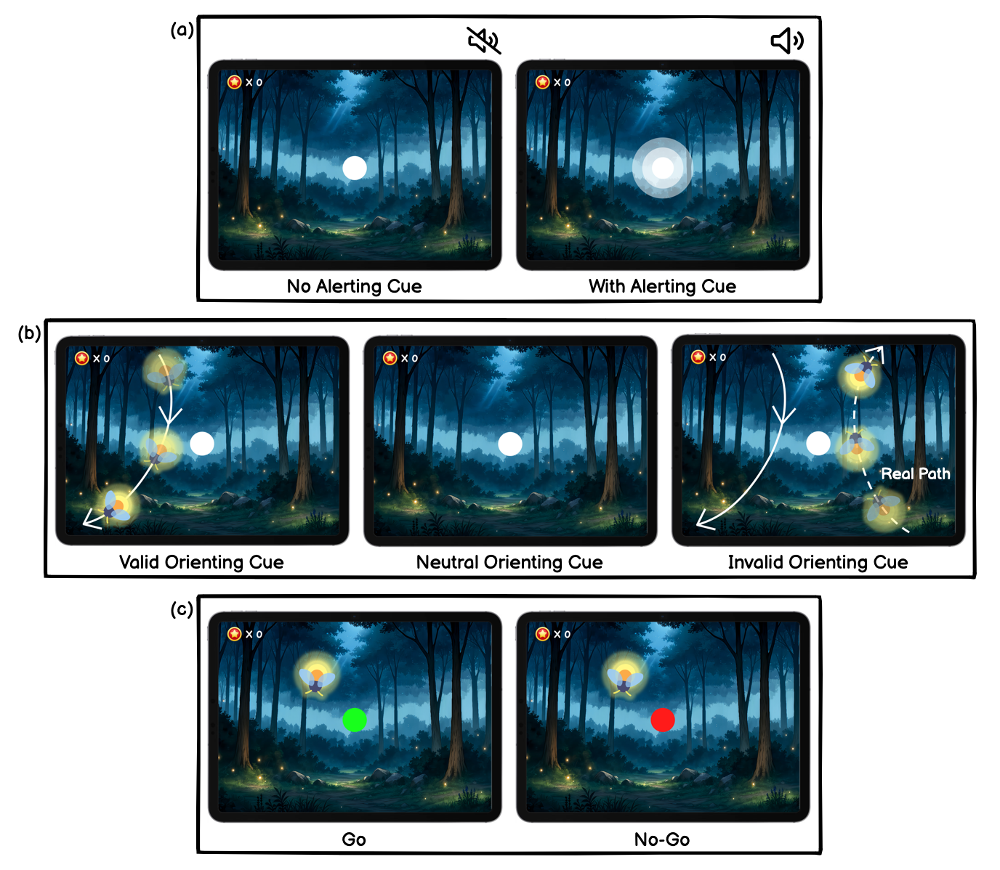
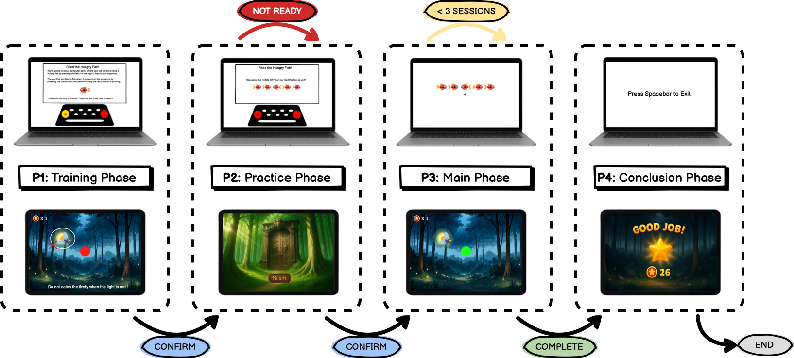
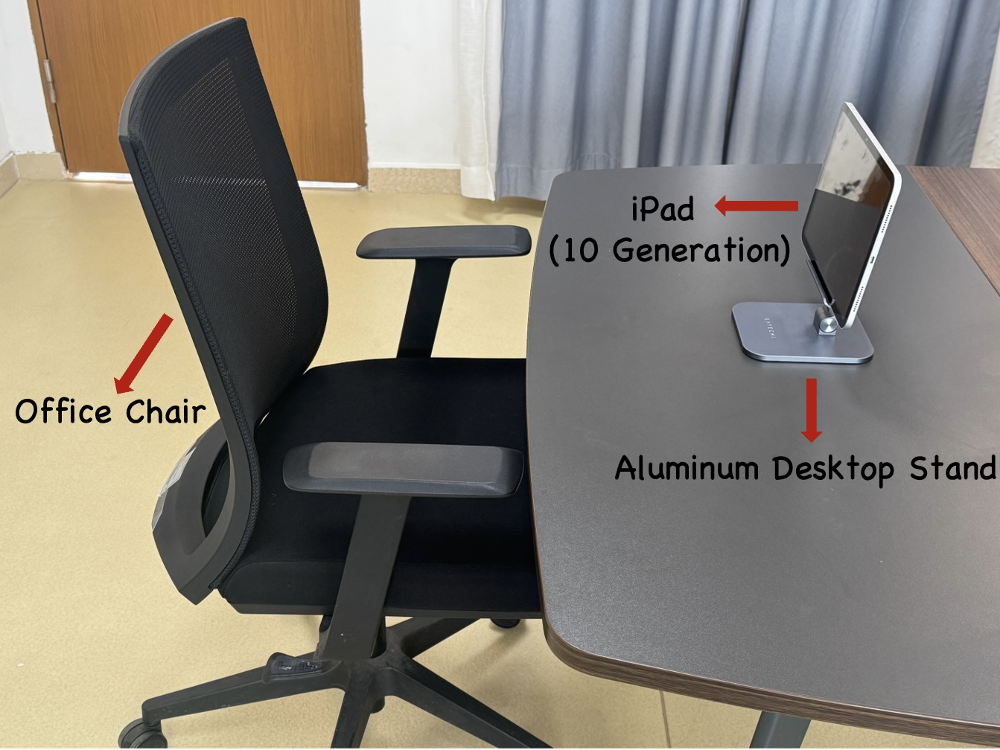
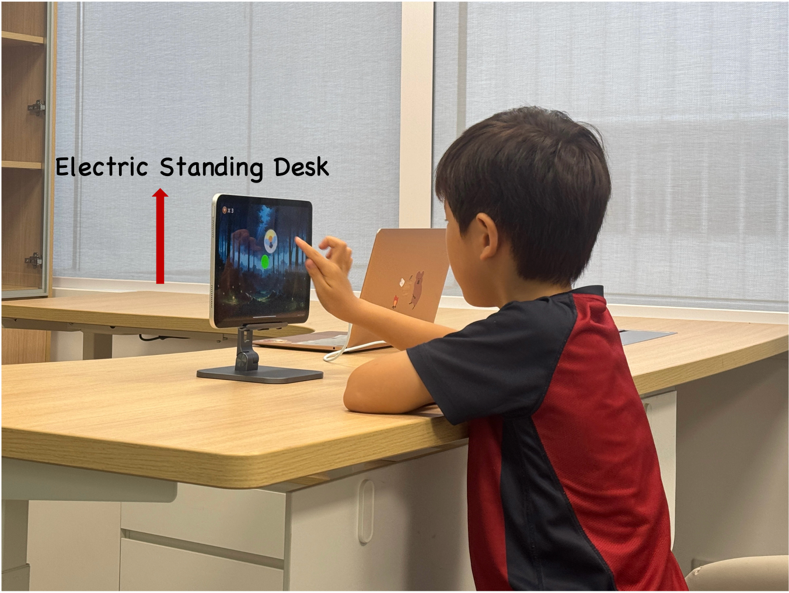
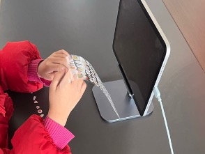
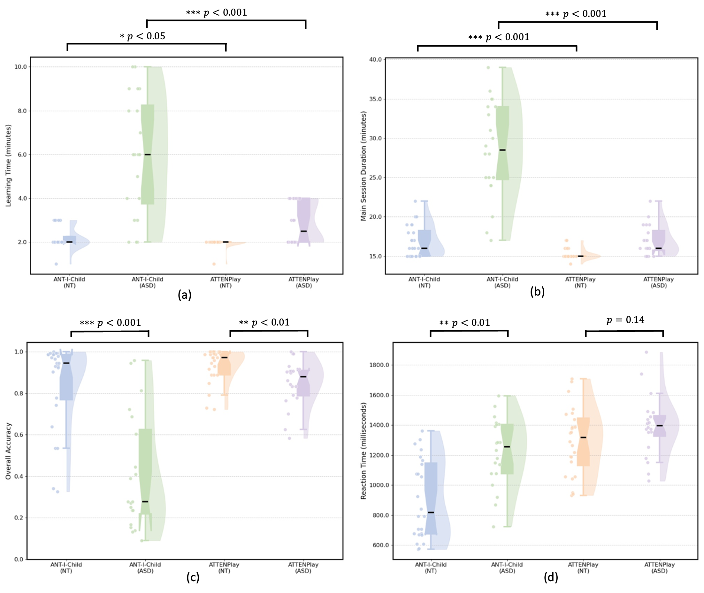
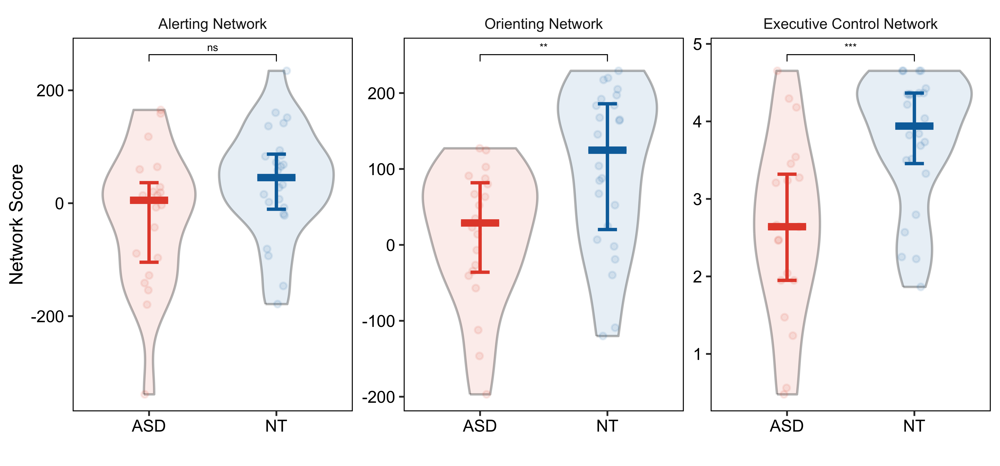

The Team


Atypical attention in Autism Spectrum Disorder (ASD) presents challenges to children's learning and daily functioning. Traditional assessments like the Attention Network Test (ANT) often fail to engage autistic children due to their abstract and repetitive nature, leading to low task completion and limited data. To address this gap, we developed ATTENPlay on a tablet, a game-based assessment from a systematic, expert-led co-design process that translates ANT tasks into a child-friendly narrative with single-tap interactions. We conducted a study with 52 children (28 autistic, 24 neurotypical) to evaluate the proposed ATTENPlay. Our findings indicate ATTENPlay significantly improves usability and user experience compared to the traditional paradigm. The assessment also captured interpretable cognitive data, revealing significant group differences in both the orienting and executive control networks. This work contributes a game-based tool that supports more accessible attention network testing for autistic children and demonstrates an inclusive design process for creating cognitive assessments.
Traditional Attention Network Tests (ANT) are designed for neurotypical adults, featuring abstract stimuli and repetitive tasks that often fail to engage autistic children. The rigid nature of these tests can induce anxiety and lead to low task completion rates, resulting in confounded or missing data. There is a critical need for an assessment tool that is theoretically rigorous yet genuinely accessible and engaging, allowing autistic children to demonstrate their cognitive abilities without being hindered by motor or sensory barriers.

To ensure inclusivity, we conducted a multi-stage formative study. This included an expert-led co-design process with clinicians and educators to formulate initial design hypotheses, a survey with 32 parents to evaluate these concepts, and a comparative pilot study with six children to identify practical usability challenges. This process highlighted the need to minimize fine-motor demands, replace abstract rules with familiar metaphors, and use gentle, diegetic feedback to prevent sensory overload.


ATTENPlay is developed as an iPad application that reimagines the ANT as a "firefly catching" game. The system incorporates three key inclusive design strategies:

We conducted a controlled, counterbalanced user study with 52 participants (28 autistic children and 24 neurotypical peers) aged 3–10 years. The study compared ATTENPlay against the ANT-I-Child (a traditional child-adapted version) to evaluate usability, user experience, and the interpretability of the captured attentional network scores.




Usability & Experience: ATTENPlay achieved a significantly higher task completion rate (92.9% vs. 71.4%) and shorter learning times compared to the traditional task. Qualitative data indicated that children found the game-based format more enjoyable and less stressful.
Cognitive Profiling: The system successfully captured cleaner cognitive data, revealing that while the alerting network was intact, autistic children showed specific challenges in the orienting network (predictive spatial attention) and the executive control network (inhibitory control) compared to their neurotypical peers.

